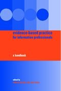

|  |
| About IR |
| Editors |
| Author instructions |
| Copyright |
| Author index |
| Subject index |
| Search |
| Reviews |
| Register |
| Home |
Booth, Andrew and Brice, Anne (Eds.) Evidence-based practice for information professionals: a handbook. London: Facet Publishing, 2004. xvi, 304 p. ISBN 1-85604-471-8. £44.95
A group of LIS researchers and practitioners mainly from English-speaking countries (UK, Australia, Canada, and USA) compiled a handbook about the use of research results for improving information practice and solving problems in this field. The idea comes from medical practice where "evidence-based medicine" is a common term. In information and library work the term, as well as the idea, is not widely used. Helping everybody else to find material that will help to develop different fields of practice, librarians and information professionals rarely try to retrieve research findings for their own professional use. Is it surprising? "A shoe-maker walks barefooted", says a Lithuanian proverb.
Often the practitioners complain that the researchers do not take into account their problems and needs. To some extent this is true—not every research project is directed towards solving a practical problem within library or information centre, besides, most research articles are written in academic style that might cause additional barriers to understanding and practical application. This is the nature of research. But many results from various areas of LIS studies as well as outside them can and should be put to a fruitful use. This handbook is one of the few attempts to close the "culture gap between researchers and practitioners" (p.54).
The authors have found a simple and effective way to explain the complex process of the search for evidence and the application of results. The first five chapters serve as an introduction to the whole idea and its main elements. From the sixth chapter the whole process is explained by ticking the appropriate items in the following checklist:
- Define the problem
- Find evidence
- Appraise evidence
- Apply results of appraisal
- Evaluate change
- Redefine problem (p. 61).
The second part of the book (Chapters 13-19) describes the process in relation to six basic areas of daily library practice: information access and retrieval, collection development, reference service, management, user education, and marketing and promotion of information service. Each chapter is followed by a special topic illustrating the process.
The handbook is written in a clear and transparent style. The chapters are short and clearly structured. Each is followed by a comprehensive reference list. These lists are about the only awesome element revealing the amount of the effort put into this simple and intelligent text.
However, the handbook does not imply that evidence-based practice is an easy way out in solving problems. The problems on the way are honestly depicted. Some of them are caused by the very institutions that should be helpful—like abstracting and indexing services. The incoherent inclusion of major research journals in the field into indexes and databases might become a major barrier in retrieving the necessary research. From my own experience, I can testify to this lack of coherence as well as to incomprehensible and unexpected (as well as unannounced) breaks in abstracting one or another journal. Selection and evaluation of the findings in the light of the current problem that a practitioner is solving is even more complicated than retrieving the evidence.
I would like to draw the attention to some more problems that are not adequately emphasised from my point of view. Already at the very beginning attention is drawn to the difference between quantitative and qualitative research results (p. 9). Both types are recommended for use depending on the questions asked. However, it is worth remembering that qualitative results often are specific for the research case and may not be generalised or applied to solve the other problems. The recommendation in Chapter 9 (Appraisal of evidence) will help to avoid the pit of inadequate application, but it is worth examining qualitative research with this characteristic in mind.
From my point of view, this handbook should figure on the desks of library and information service managers of all levels as well as on the desks of professional librarians and information specialists of any rank.
Dr. Elena Macevičiūtė
Vilnius University and Högskolan i Borås
June, 2004
How to cite this review
Macevičiūtė, E. (2004). Review of: Booth, Andrew and Brice, Anne (Eds.) Evidence-based practice for information professionals: a handbook. London: Facet Publishing, 2004. Information Research, 9(4), review no. R142 [Available at: http://informationr.net/ir/reviews/revs142.html]